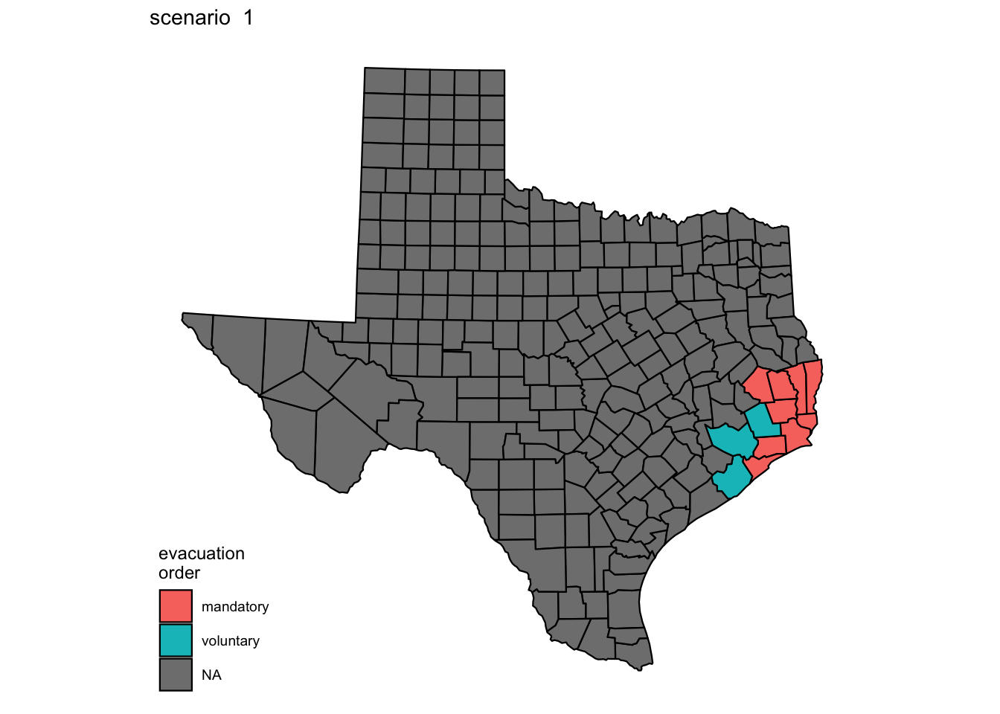
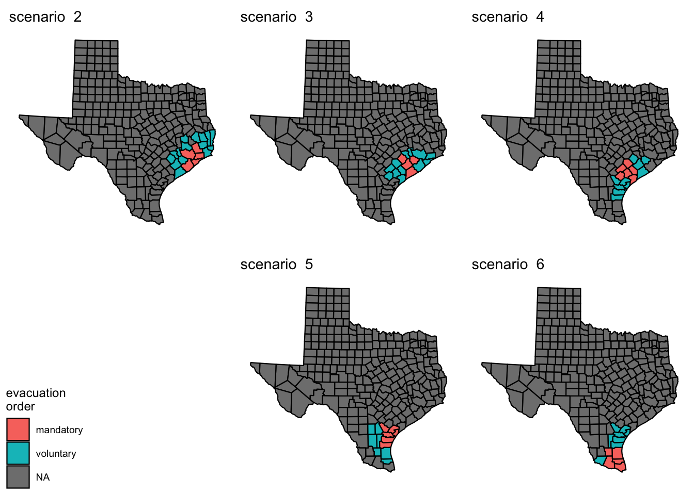

1
Atlantic hurricanes
1.1
Laura
1.2
Low lying counties
1.3
Hurrican hazard counties
2
Reception centers
2.1
East Gulf Coast
2.2
Central Gulf Coast
2.3
South Gulf Coast
2.4
Adjacency Matrix
3
Hurricane Scenarios
3.1
Laura
3.2
Other hypothetical scenarios
4
Evacuations estimations
Hurrican Covid Importations Hazard
3
Hurricane Scenarios
mandatory and voluntary evacuation orders
3.1
Laura

3.2
Other hypothetical scenarios
